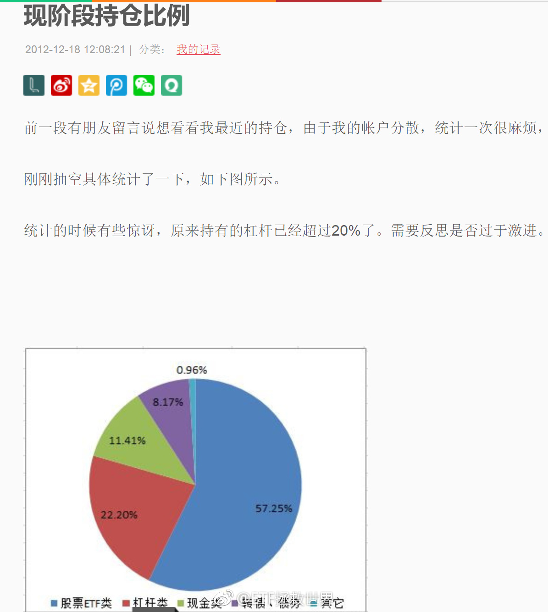

回复@songxin6691:大家可千万别听我的乱割。我能说，军工是目前所有指数里唯一趋势走好的吗……太诡异了……//@songxin6691:军工再次益达喷，拿着睡不着，刚割肉了点换成了中证养老和富国500！@ETF拯救世界:军工这么NB，你说A股能涨吗……
没想到我都走了，大家还是这么有情有义。我真的非常感谢各位。虽然我知道很多圈我的朋友也没有来微博，也看不到这个。。又得奖了。当然是老规矩，奖品还是送给大家。我无功不受禄。我先联系一下点赞评论最多的安娜，看她要不要。如果不要，我想个办法选一位微博粉丝送出。。虽然没有上次的华为手机好，应该也还可以。网页链接
真的非常有意思。从过去二十年的情况看，发达国家股市估值基本是步调一致的。比如2008年，美德英大致都在10倍左右。2011年欧债危机的时候，大家都在13左右。到了2015年，三个国家都在21-23。2015年后开始分化。现在，只有美国一路上扬，维持历史高位22。德国英国已经回落到16、17的历史平均水平。美国为什么这么牛，是道德的沦丧还是人性的泯灭？拭目以待。数据是标普500/dax30/ftse100
各位放心，我没空为这点破事儿生气。。一大堆事儿呢。今天五岁的儿子跟我说爱上幼儿园同班女孩了，悲喜交加啊！都哪儿学的乱七八糟的！另外，做为帝都学区房接盘侠的我要开始装修了，有没有靠谱的全屋定制品牌介绍一下。
控制好节奏。没多大点事。//@ETF拯救世界:新低不要着急买。控制好节奏。你家没矿，也不可能像别人一样无限借钱，无限现金流。把已有的资源分配好。不骄不躁，徐而图之。//@ETF拯救世界:再说一次。@ETF拯救世界:目前仓位很合适。稍微放缓发车节奏。等空间。
各位朋友都应该了解的，是投资的世界中，没有任何时候都牛逼的投资者。过去没有，现在没有，未来也没有。潮起潮落，河东河西。一浪接一浪，没有人能永立潮头。只要你能做到长期看，不犯大错，熊市不赔或者极少亏损，牛市尽量跟上。就ok。至于一些小错误，好好总结，有机会修正就修正，实在修正不了就尽量减少危害。我从来不会因为某位投资者一段时间表现不好就嗤之以鼻，也不会因为某人一段时间好就奉若神明。这两种表现都是非常不成熟的。别人好的时候，想想为什么会好。做的不好的时候，想想为什么会差。别人好就羡慕嫉妒恨一心希望别人摔跟头，别人差就幸灾乐祸踩两脚。对你有任何好处吗。没有。你也不会进步。我自己也经常会犯错。这个我心知肚明。但是很多事情事后看对错都一清二楚，当时却未必能明白。无论是我自己，又或者是围观的人，都是如此。在资本市场不犯大错，我自认基本能做到。大方向不会错的离谱。一些具体操作，细节，当然还有很多上升的空间。也还要尽力学习研究。但还是上面说的，没人能每个时刻都做好，尽人力，听天命。会努力，但不会苛求自己。在A股玩了十几年，也算有不少收获。一个是怕均值回归，凭什么你比均值好那么多？第二个是基数不同了。如果你赚了10倍，那么波动10%来回就是一个本金。10%就是10倍变9倍或者11倍。所以稳步向上是最优选择。当然，大机会来了，该干还是要干。没有人是神。有个神，现在在里面关着。所以，外面的都是人。始终以人的标准去审视和要求别人，会比较合适。否则，别人见你总是宽以待己，严于律人，嘴上不说，心里也是嘲笑和鄙视的。以上。
回复@William_SZ:给上传的图片加昵称水印？ 可以看2015年的交易记录。//@William_SZ:2015年7-8月正是股灾吧，E大怎么做到分级赚了40%多的？@ETF拯救世界:刚看到有人说，我把前几年操作分级A/B之类的收益也算进第二轮计划了，这就算是造谣了吧。如果我把分级的收益也算入计划那计划收益率可以简单再x2。2015年7-8月分级赚了40%多，如果加到计划上会让计划总收益变成17倍。更不要说之前的分级b了。但这样玩有意思吗？计划就是计划，只有指数基金，只有ETF。跟很多人不一样，我从来不愿意多谈以前的收益率。因为空口说白话有什么意思？不过好在网络记录了很多东西。比如2012年12月初的计划，一次买入4.5份。这相当于现在的13.5份。买入后，计划仓位90%。中小指数大底。再贴一张我2012年12月初大力买入后的仓位。我从来不会把什么分级，杠杆的收益率都算入计划，所以，我本人的投资收益率，比计划还是会高一点的。但说这些毫无意义，我从来不会多说。当时60%股票+ETF。主要是计划。另外有20%分级B，3-4倍杠杆。8%转债。整体仓位超过100%。就酱。后来赚了多少，不用说。口说无凭。几年后你就能推算出第二轮了。
回复@梦游鱼生活在路上:当然不是。一开始我以为你真的是随口一说。但我看完你所有的评论，知道你是有备而来要搞事情了。我当然可以告诉你我在2005-2007/08-09,2010-2015，每个阶段的收益率。但是我告诉你后，你会不会要求看历史交易做出证明？我还是可以给你看，你会不会接着要求看交易截图？@ETF拯救世界:刚看到有人说，我把前几年操作分级A/B之类的收益也算进第二轮计划了，这就算是造谣了吧。如果我把分级的收益也算入计划那计划收益率可以简单再x2。2015年7-8月分级赚了40%多，如果加到计划上会让计划总收益变成17倍。更不要说之前的分级b了。但这样玩有意思吗？计划就是计划，只有指数基金，只有ETF。跟很多人不一样，我从来不愿意多谈以前的收益率。因为空口说白话有什么意思？不过好在网络记录了很多东西。比如2012年12月初的计划，一次买入4.5份。这相当于现在的13.5份。买入后，计划仓位90%。中小指数大底。再贴一张我2012年12月初大力买入后的仓位。我从来不会把什么分级，杠杆的收益率都算入计划，所以，我本人的投资收益率，比计划还是会高一点的。但说这些毫无意义，我从来不会多说。当时60%股票+ETF。主要是计划。另外有20%分级B，3-4倍杠杆。8%转债。整体仓位超过100%。就酱。后来赚了多少，不用说。口说无凭。几年后你就能推算出第二轮了。
回复@小五雀雀:富国红利2008年底成立。你2009年1月第一次投入，到现在，将近十年，总收益率58%。年化可以说非常一般。如果未来在这种市场环境下你退休，恐怕非常有问题。我坚决反对简单定投。尤其是A股。@ETF拯救世界:目前仓位很合适。稍微放缓发车节奏。等空间。
再扛两天不好吗……//@ETF拯救世界:新低不要着急买。控制好节奏。你家没矿，也不可能像别人一样无限借钱，无限现金流。把已有的资源分配好。不骄不躁，徐而图之。//@ETF拯救世界:再说一次。@ETF拯救世界:目前仓位很合适。稍微放缓发车节奏。等空间。
新低不要着急买。控制好节奏。你家没矿，也不可能像别人一样无限借钱，无限现金流。把已有的资源分配好。不骄不躁，徐而图之。//@ETF拯救世界:再说一次。//@ETF拯救世界:最近一定要控制节奏。不要太急，不要太激进。现在战场上战况混乱，先拿着手里的筹码认真观察一下。@ETF拯救世界:目前仓位很合适。稍微放缓发车节奏。等空间。
至于第三轮的预期收益率，我每篇文章上面都写得清清楚楚：“无法预测”你可以控制自己的成本，但不可能预测自己的收益率。你知道五年后，十年后各个指数多少点？谁能预测？谁说能谁就是骗子或者傻子。我们能做的，只能是尽量在低位多买点便宜货。然后等着。小富由俭，大富在天。老天爷给你一个2年7倍或者3年5倍那是咱们运气好。如果不给你能怎样？我预测不了。毕竟水货。
我相信长期关注我的朋友，无论是从0910开始，还是2015开始的，都能很清楚一件事，那就是：我，就是个不折不扣的水货！低位唱空，高位唱多！低位卖出，高位买入！08、12卖出，07、15买入！低位买分级A，高位接盘分级B！每天预测不停打脸！每次买入都在高位！各种操作一塌糊涂，股票、指数、黄金、原油、债券所有品种都在赔钱！历史上也从没有赚过！要数据没数据，要策略没策略。混吃等死，渣渣辉。关注我的这些人你们到底是什么时候瞎的，赶紧取关吧。我真不需要你来关注我。我也不卖私募，也不写书，我要你关注我干嘛？让我复盘过去收益给你看的，可以。当然没问题。我把几个账户打开让你看资产总数，历史交易都可以。你打算出多少钱建立一个私募让我来帮你打理？还是说你准备了多少稿费给我？要不然，你凭什么要求，而我又是不是吃饱了撑的没事干证明给你看？我就是简简单单把自己的投资计划公布出来而已。你放心，也不会有下一轮了。这轮没办法，必须要做完。这轮做完，证明普通人在A股也能挣钱，A股不只是辣鸡场，也可以是聚宝盆，就够了，我的目的就达到了。还公布第四轮？我真是闲的D疼了。
刚看到有人说，我把前几年操作分级A/B之类的收益也算进第二轮计划了，这就算是造谣了吧。如果我把分级的收益也算入计划那计划收益率可以简单再x2。2015年7-8月分级赚了40%多，如果加到计划上会让计划总收益变成17倍。更不要说之前的分级b了。但这样玩有意思吗？计划就是计划，只有指数基金，只有ETF。跟很多人不一样，我从来不愿意多谈以前的收益率。因为空口说白话有什么意思？不过好在网络记录了很多东西。比如2012年12月初的计划，一次买入4.5份。这相当于现在的13.5份。买入后，计划仓位90%。中小指数大底。再贴一张我2012年12月初大力买入后的仓位。我从来不会把什么分级，杠杆的收益率都算入计划，所以，我本人的投资收益率，比计划还是会高一点的。但说这些毫无意义，我从来不会多说。当时60%股票+ETF。主要是计划。另外有20%分级B，3-4倍杠杆。8%转债。整体仓位超过100%。就酱。后来赚了多少，不用说。口说无凭。几年后你就能推算出第二轮了。